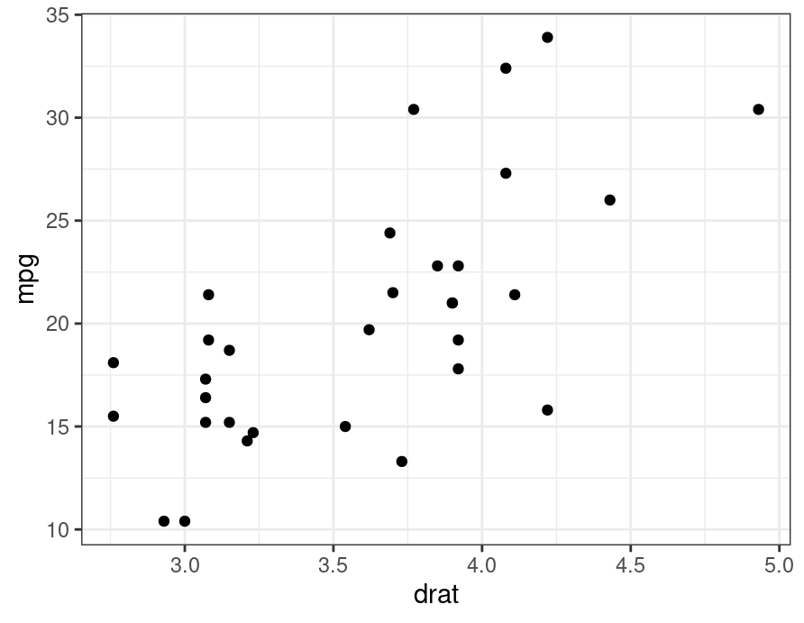
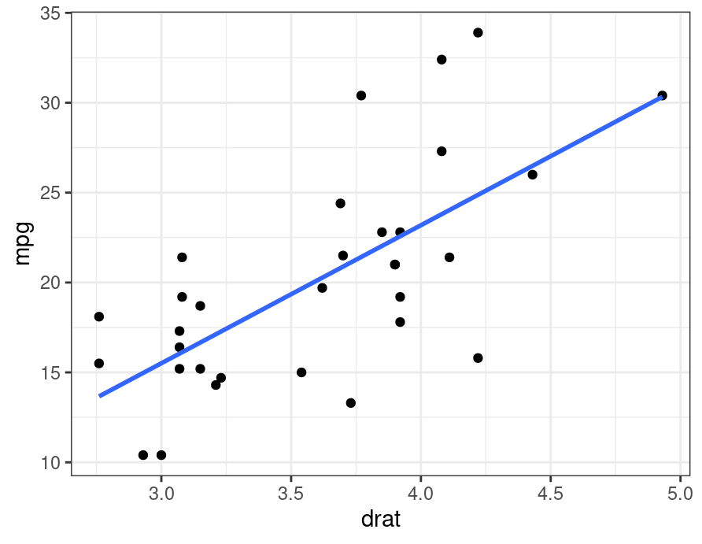
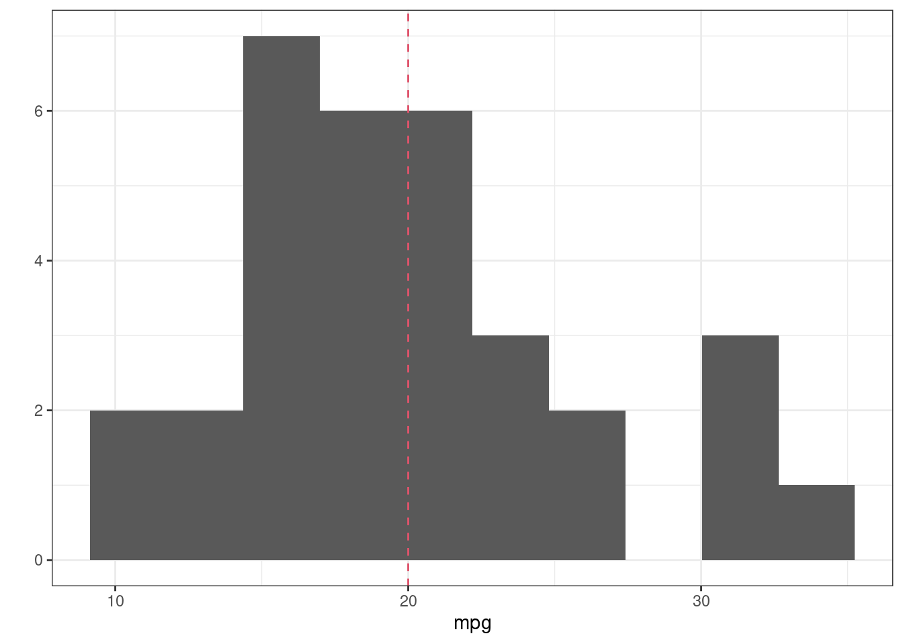
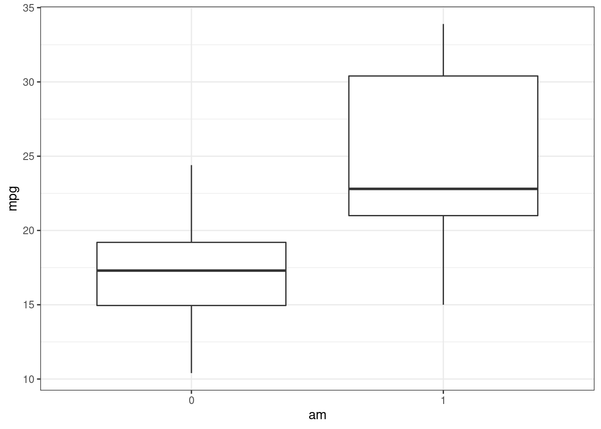
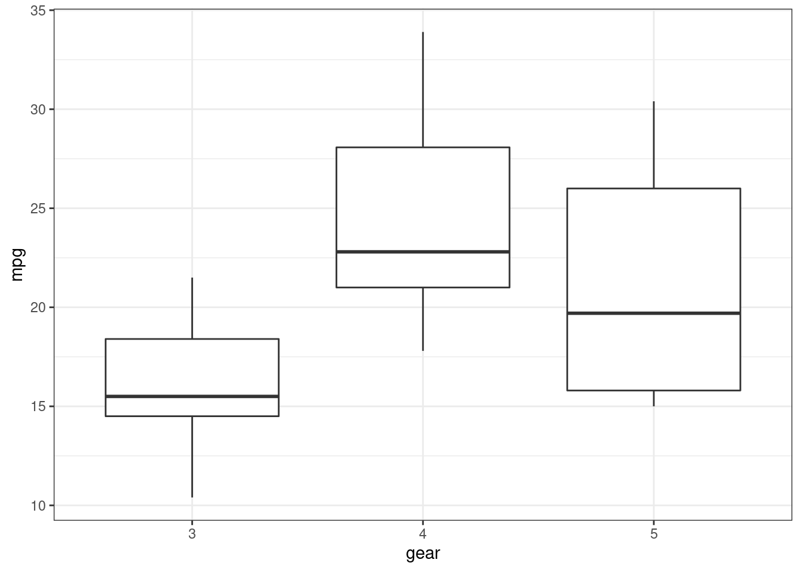

Motivation
David Gerard
2021-07-26
Learning Objectives
- What is linear regression?
- What are the goals of linear regression?
- What can linear regression accomplish?
- How are other procedures related to linear regression?
- https://lindeloev.github.io/tests-as-linear/
What is simple linear regression?
Equation for line: \(y = \beta_0 + \beta_1 x\)

Have cloud of points

Fit line to cloud of points

Infer slope from fitted line

Inference:
- Test if slopes are 0
- Confidence intervals on slopes.
- Interpret sign/magnitude of slopes.
What is multiple linear regression?
Equation for a 2-d plane: \[ y = \beta_0 + \beta_1 x_1 + \beta_2 x_2 \]
When \(x_1\) is fixed (not changing), \(y = \beta_0 + \beta_1 x_1 + \beta_2 x_2\) is the equation for a line with slope \(\beta_2\) and \(y\)-intercept \(\beta_0 + \beta_1 x_1\).
When \(x_2\) is fixed (not changing), \(y = \beta_0 + \beta_1 x_1 + \beta_2 x_2\) is the equation for a line with slope \(\beta_1\) and \(y\)-intercept \(\beta_0 + \beta_2 x_2\).
So a plane can be interpreted as a line when you fix all predictors but one.
Have a cloud of points:
Fit plane to cloud of points:
Infer slopes from fitted plane.
Inference:
- Test if slopes are 0
- Confidence intervals on slopes.
- Interpret sign/magnitude of slopes.
Steps of a Regression Analysis
The above procedures assume that:
- The cloud of points roughly follows a line (or plane).
- All predictors (the \(x\)’s) are associated with the response (the \(y\)). We might have many predictors and we need to choose which ones to include.
We typically need to transform the data or try out a few models.
Steps:
What can you use it for?
- Detecting trends.
- Easy to see trends if you have two variables. Harder if you have more. Need something more sophisticated.
- Linear regression allows us to say “folks that have bigger x tend to have bigger y”.
- Control for other variables.
- “Folks that have the same z but bigger x tend to have bigger y.”
- Prediction
- Most machine learning tasks in the read world are “small data”.
- The fancy ML methods have many parameters that require lots of data to estimate.
- Linear regression is often the best you can do in small data tasks.
Generality
Many statistical procedures are special cases of (or approximations to) linear regression.
Understanding linear regression really well will give you a deeper understanding of statistics in general.
One sample \(t\)-test
- \(H_0\): Average MPG = 20
- \(H_A\): Average MPG \(\neq\) 20

## t-test p-value
t.test(mtcars$mpg, mu = 20)$p.value## [1] 0.9328## linear regression p-value
lmout <- lm(mpg - 20 ~ 1, data = mtcars)
coef(summary(lmout))[, "Pr(>|t|)"]## [1] 0.9328Two-sample \(t\)-test

## t-test p-value
t.test(mpg ~ am, data = mtcars, var.equal = TRUE)$p.value## [1] 0.000285## linear regression p-value
lmout <- lm(mpg ~ am, data = mtcars)
coef(summary(lmout))["am", "Pr(>|t|)"]## [1] 0.000285One-way ANOVA

## F-test p-value from ANOVA
mtcars %>%
mutate(gear = as.factor(gear)) %>%
aov(mpg ~ gear, data = .) %>%
anova()## Analysis of Variance Table
##
## Response: mpg
## Df Sum Sq Mean Sq F value Pr(>F)
## gear 2 483 241.6 10.9 0.00029
## Residuals 29 643 22.2## F-test p-value from linear model
mtcars %>%
mutate(gear = as.factor(gear)) %>%
model.matrix(~gear, data = .) %>%
as_tibble() %>%
mutate(mpg = mtcars$mpg) ->
lmdat
head(lmdat)## # A tibble: 6 x 4
## `(Intercept)` gear4 gear5 mpg
## <dbl> <dbl> <dbl> <dbl>
## 1 1 1 0 21
## 2 1 1 0 21
## 3 1 1 0 22.8
## 4 1 0 0 21.4
## 5 1 0 0 18.7
## 6 1 0 0 18.1lmout <- lm(mpg ~ 1 + gear4 + gear5, data = lmdat)
summary(lmout)##
## Call:
## lm(formula = mpg ~ 1 + gear4 + gear5, data = lmdat)
##
## Residuals:
## Min 1Q Median 3Q Max
## -6.733 -3.233 -0.907 2.848 9.367
##
## Coefficients:
## Estimate Std. Error t value Pr(>|t|)
## (Intercept) 16.11 1.22 13.25 7.9e-14
## gear4 8.43 1.82 4.62 7.3e-05
## gear5 5.27 2.43 2.17 0.038
##
## Residual standard error: 4.71 on 29 degrees of freedom
## Multiple R-squared: 0.429, Adjusted R-squared: 0.39
## F-statistic: 10.9 on 2 and 29 DF, p-value: 0.000295- \(p\)-value for the \(F\)-tests in both cases was about 0.000295
Many other connections
- Correlation tests, rank tests, chi-square tests, and many others can be seen as approximations of linear regression.